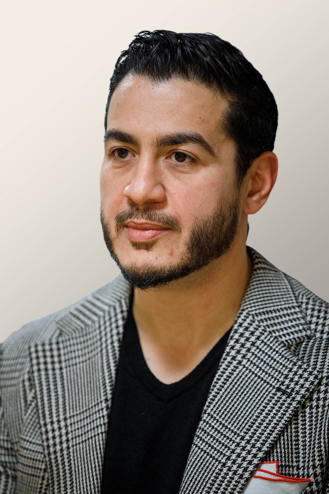

AQSh: Donald Tramp Senatga musulmon nomzod Abdul El-Saydga qaratilgan hujumlarni kuchaytirdi
Michigan shtatidan Senatga nomzod Abdul El-Sayed g'alaba qozonsa, AQSh tarixidagi birinchi musulmon senator bo'ladi. Prezident Donald Tramp uni «jihodchi» deb atadi; nomzod bu so'zlarni «chalg'itish» deb baholadi.

AQShda 3-noyabr kuni bo'lib o'tadigan oraliq saylovlarda Michigan shtatidan Senatga nomzod Abdul El-Sayed g'alaba qozonsa, u mamlakat tarixidagi birinchi musulmon senator bo'ladi. Saylovoldi so'nggi haftalarida AQSh prezidenti Donald Tramp nomzodning diniga qaratilgan hujumlarini kuchaytirdi.
Tramp nima dedi
2026-yil 25-oktabr kuni Michigandagi Port-Huron shahrida o'tkazilgan mitingda Donald Tramp Abdul El-Saydni «jihodchi» va «terrorchilar tarafdori» deb atadi. Prezident uni milliy xavfsizlikka tahdid sifatida ko'rsatib, u Senatga kirishdan oldin «metall detektoridan» o'tishi kerakligini aytdi. Tramp shuningdek El-Sayed «shariat qonunini» joriy qilmoqchi, agar bunga erishsa «birinchi bo'lib sudlanishi kerak», demokratlar g'alaba qozonsa esa mamlakatga «jihodchilar to'planib», hatto Rojdestvoni ham nishonlab bo'lmaydi, degan da'volarni ildi.
El-Sayed javobi
26-oktabr kuni Detroytda o'tkazilgan matbuot anjumanida Abdul El-Sayed bu so'zlarni «chalg'itish» deb baholadi. «Mening ismim va e'tiqodim — benzin qimmatligining sababi emas», dedi u. Nomzod Trampni benzin narxi va Eron bilan urush kabi amaldagi muammolardan jamoatchilik e'tiborini chalg'itishda aybladi.

Nomzod kim?
Abdulrahmon Muhammad El-Sayed — 41 yoshli epidemiolog va shifokor, misrlik muhojirlar oilasida tug'ilgan, Kolumbiya universitetida tibbiyot va Oksfordda jamoat salomatligi bo'yicha ta'lim olgan. U 2015–2017-yillarda Detroyt sog'liqni saqlash departamentini boshqargan, 2018-yilda Michigan gubernatorligiga nomzod bo'lib Gretchen Uitmerga yutqazgan, keyinchalik Ueyn okrugi sog'liqni saqlash bo'limini boshqargan. 2026-yil 5-avgust praymerizida u qariyb 65 million dollarlik tashqi xarajatga qaramay, Heyli Stivensni 48,4% ga qarshi 47,6% bilan yengdi.
Michigan va arab jamoasi
Michigan AQShdagi eng yirik arab va musulmon jamoalaridan biriga ega: shtatda qariyb 400 000 arabamerikalik va 250 000 ga yaqin musulmon yashaydi. Detroyt yonidagi Dirborn shahri «Arab Amerikasining poytaxti» deb ataladi. Umumiy saylovda El-Sayed respublikachi, sobiq kongressmen Mayk Rojers bilan deyarli teng bormoqda.
E'tiroz
Trampning so'zlari uning o'z ittifoqchilari tomonidan ham qoralandi. 2024-yilgi saylovda prezidentning arabamerikaliklar bilan ishlashiga yordam bergan «Arab Americans for Trump» guruhining asoschisi Bishara Bahbah bu so'zlarni irqchilik deb atadi: «Bu so'zlar o'rinsiz va aqlga sig'maydi. Hech bir sog'lom odam bunday demaydi», dedi u. Guruh keyinchalik nomini «Arab Americans for Peace»ga o'zgartirgan.